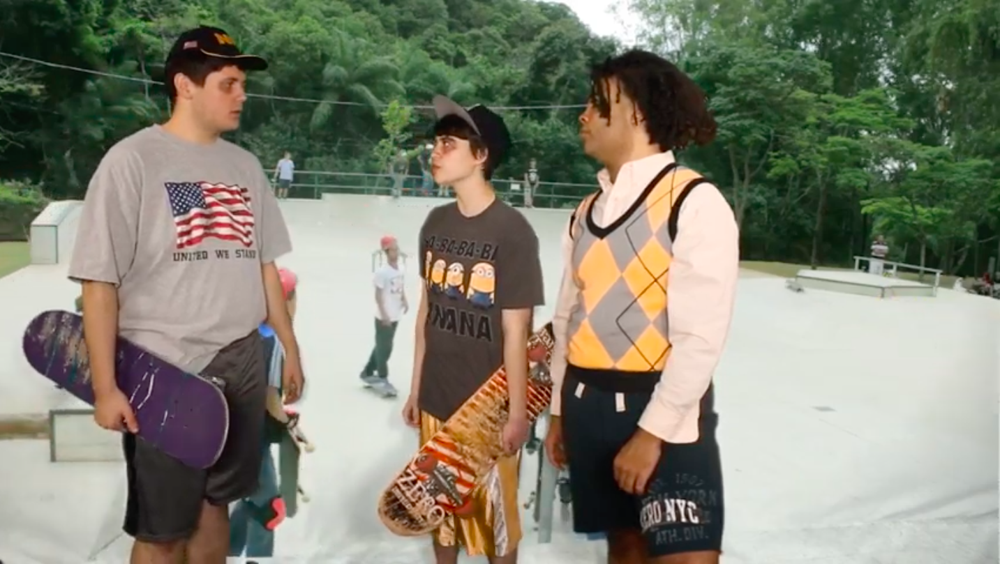

Blackpill is my first short film as a writer/director. It's a sci fi horror movie. As the Coronavirus struck full force it was accepted into its first two festivals. Since then it's been selected for two more, making for a total of four spread across three countries! It's playing Inside Out next month!
Tha Park is a couple different things! It started, as evidenced by the youtube playlist linked in the foregoing sentence, as a no budget "web series" basically handmade by my two friends (Harley & Owen) and I. For the past year or so, we've been trying to reboot it in a more "acceptable" and less "god awful" way. As a result of our endeavoring to do that, we got into the final round of the Sundance Makers' Lab. Here's our application video. We also won a 10k dollar post-production grant through The Film Fund. We finally finished shooting in August, and with any luck, we'll be dropping it online in less than a year!
During the quarantine that also resulted in this website, I was involved in:
Joel Quest, a flicker film qua bit all about my friend, Joel, set to a noise track I made.
Quarantine, a short I directed, shot, co-wrote, and co-edited. It stars Harley and Owen, both of whom had a hand in writing it, the former of whom had a hand in editing it.
McKinley Park, a short documentary I made during a period in which I was not safe in my own neighborhood because Latin King's were attacking random black people on the street.
On top of the grants & festivals associated with finished projects, Harley Foos & I's film concept Gay Harley/Straight Harley made it to the final round of Inside Out Film Festival's Pitch, Please competition.